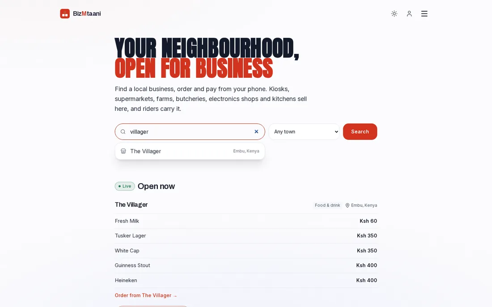
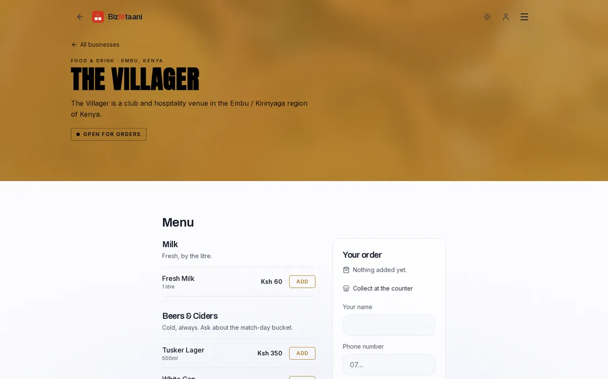

Live product · bizmtaani.com
BizMtaani
Two captured surfaces from the live marketplace: finding a business near you, and the shop’s own page.
- FindBusinesses open near you, by name or by what they sell
- ChooseThe shop’s own page — its items, and its prices
- OrderPlaced with that shop, collected at the counter or brought by a rider
The two frames are captures. The three steps are what the product does — not a transaction staged for this page.

